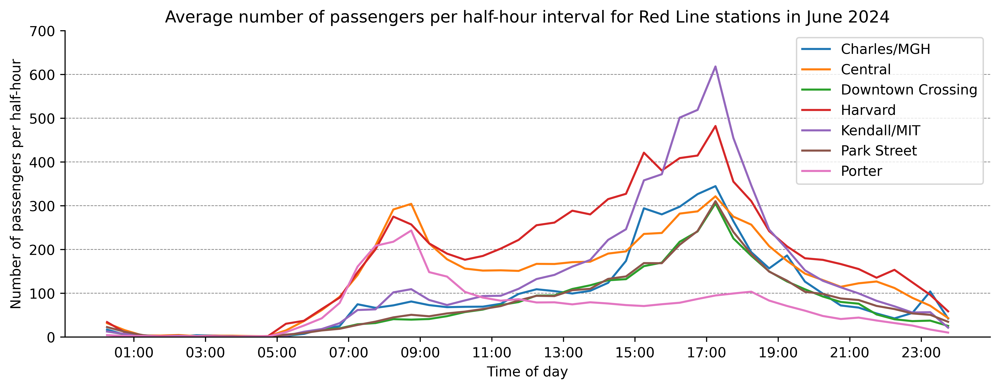
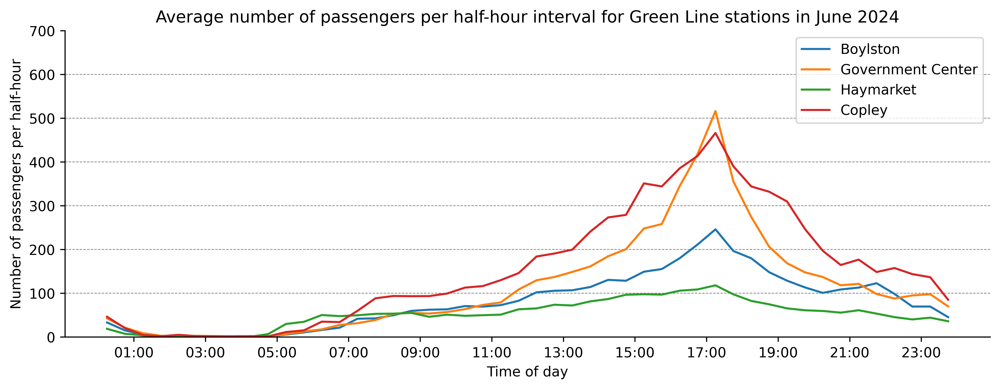
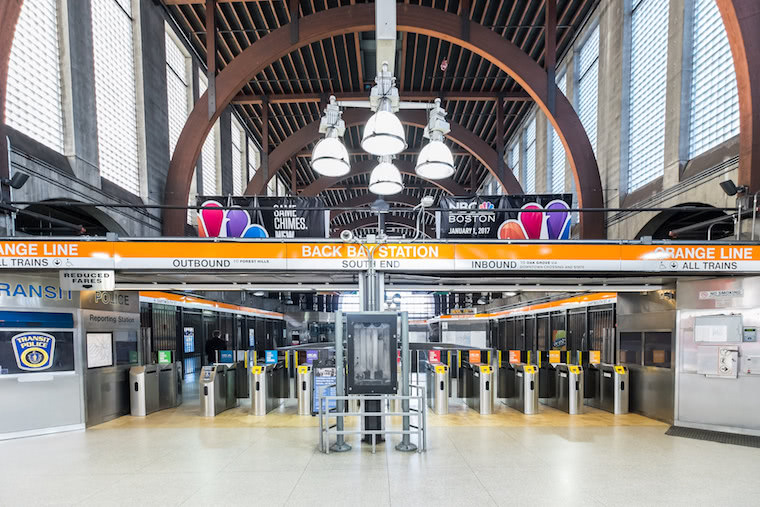
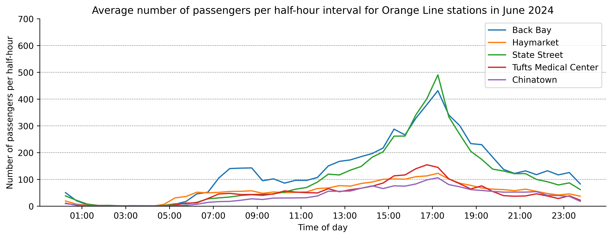
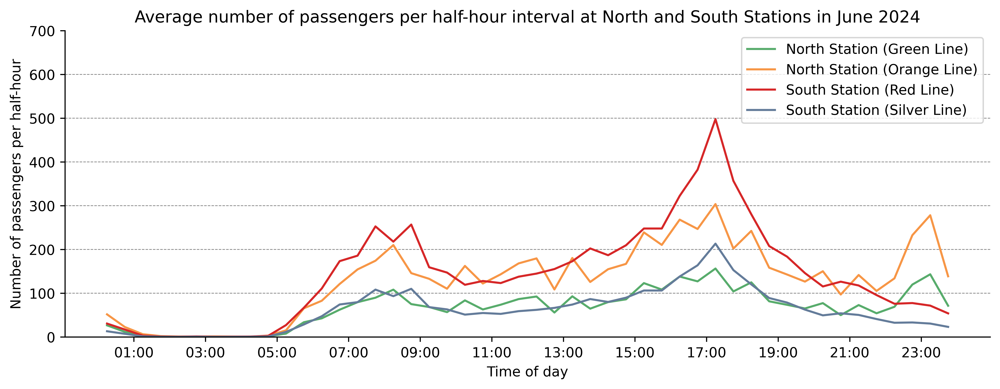

As part of our swab sampling pilot project, we want to identify stations where we can collect a lot of swab samples in a short amount of time. One way to identify these stations is to look at the number of passengers that enter each station, which the MBTA provides. They give the number of passengers that enter a gated station every 30 minutes. Crucially, this doesn’t tell us how many people leave the station, which would be useful to understand full passenger volume of a station.
Station ridership
Red line
The red line is closest to the office and MIT and thus the obvious candidate for sampling. Let’s take a look at the daily ridership, averaged over the month of June 2024, for the red line stations closest to the SecureBio office (Porter, Central, Kendall/MIT, Charles/MGH, Park Street, and Downtown Crossing).
Code
plt.figure(figsize=(12, 4), dpi=600)target_stations = ["Porter", "Harvard", "Central", "Kendall/MIT", "Charles/MGH", "Park Street", "Downtown Crossing"]ridership_2024["date_dt"] = pd.to_datetime(ridership_2024["service_date"])reference_date = pd.to_datetime("1800-06-01") # reference date is used as a placeholder, set to an implausible valueridership_2024["time_dt"] = pd.to_datetime(reference_date.strftime('%Y-%m-%d') +' '+ ridership_2024["time_period"].str.strip("()"))morning_peak_rides = {}evening_peak_rides = {}# Data represents ridership over the half hour starting at the given time. Adding 15 minutes to create correct center of interval.ridership_2024["time_dt"] = ridership_2024["time_dt"] + pd.Timedelta(minutes=15)red_line_2024 = ridership_2024[ridership_2024["route_or_line"] =="Red Line"]june_2024 = red_line_2024[red_line_2024["date_dt"].dt.month ==6]stations = june_2024["station_name"].unique()for station in stations:if station in target_stations: june_station = june_2024[june_2024["station_name"] == station] mean_use_per_interval = june_station.groupby("time_dt")["gated_entries"].mean() mean_use_per_interval = mean_use_per_interval.reset_index() max_usership_morning = mean_use_per_interval[mean_use_per_interval["time_dt"].dt.hour.between(1, 10)]["gated_entries"].max() max_usership_evening = mean_use_per_interval[mean_use_per_interval["time_dt"].dt.hour.between(16, 23)]["gated_entries"].max() morning_peak_rides[station] = mean_use_per_interval[mean_use_per_interval["gated_entries"] == max_usership_morning] evening_peak_rides[station] = mean_use_per_interval[mean_use_per_interval["gated_entries"] == max_usership_evening] plt.plot(mean_use_per_interval["time_dt"], mean_use_per_interval["gated_entries"], label=station)else:if PRINT:print(station)ax = plt.gca()plt.legend()y_lims = (0, 700)for y inrange(y_lims[0], y_lims[1], 100): plt.axhline(y=y, color='gray', linestyle='--', zorder=-1, linewidth=0.5)plt.ylim(y_lims)plt.gca().xaxis.set_major_formatter(mdates.DateFormatter('%H:%M'))plt.gca().xaxis.set_major_locator(mdates.HourLocator(interval=2))ax.spines['top'].set_visible(False)ax.spines['right'].set_visible(False)plt.xlabel("Time of day")plt.ylabel("Number of passengers per half-hour")plt.title("Average number of passengers per half-hour interval for Red Line stations in June 2024")plt.show()# Morning peaks:morning_peak_ride_porter =round(morning_peak_rides["Porter"]["gated_entries"].values[0])morning_peak_ride_time_porter = morning_peak_rides["Porter"]["time_dt"].dt.time.values[0].strftime("%H:%M")morning_peak_ride_central =round(morning_peak_rides["Central"]["gated_entries"].values[0])morning_peak_ride_time_central = morning_peak_rides["Central"]["time_dt"].dt.time.values[0].strftime("%H:%M")morning_peak_ride_kendall =round(morning_peak_rides["Kendall/MIT"]["gated_entries"].values[0])morning_peak_ride_time_kendall = morning_peak_rides["Kendall/MIT"]["time_dt"].dt.time.values[0].strftime("%H:%M")morning_peak_ride_harvard =round(morning_peak_rides["Harvard"]["gated_entries"].values[0])morning_peak_ride_time_harvard = morning_peak_rides["Harvard"]["time_dt"].dt.time.values[0].strftime("%H:%M")evening_peak_ride_kendall =round(evening_peak_rides["Kendall/MIT"]["gated_entries"].values[0])evening_peak_ride_time_kendall = evening_peak_rides["Kendall/MIT"]["time_dt"].dt.time.values[0].strftime("%H:%M")evening_peak_ride_harvard =round(evening_peak_rides["Harvard"]["gated_entries"].values[0])evening_peak_ride_time_harvard = evening_peak_rides["Harvard"]["time_dt"].dt.time.values[0].strftime("%H:%M")evening_peak_ride_charles =round(evening_peak_rides["Charles/MGH"]["gated_entries"].values[0])evening_peak_ride_time_charles = evening_peak_rides["Charles/MGH"]["time_dt"].dt.time.values[0].strftime("%H:%M")

Figure 1
Central, Harvard, and Porter stations see the most ppl entering stations in the morning due to commuters going into the city (304, 275, and 243 from 8:30-9:00, respectively). Kendall/MIT, Charles/MGH, and Harvard see the most people entering in the evening (618, 345, and 482 from 17:00-17:30, respectively). People who take the T from a commuter station in the evening likely arrived at the same station in the evening. We can thus assume that the evening bump in ridership for Kendall and Harvard can be added to the morning bump.
Based on the data here, Kendall and Harvard station all seem like good stations to do sampling in the morning.
Green line
The green line is fairly close to the office (two stations away). Looking at Figure 2, the four Green line stations closest to the nearest Red line station are Government Center, Haymarket, Boylston, and Copley.
Figure 2: MBTA Subway Map (2013)
Code
plt.figure(figsize=(12, 4), dpi=600)target_stations = ["Government Center", "Haymarket", "Boylston", "Copley"]peak_rides = {}green_line_2024 = ridership_2024[ridership_2024["route_or_line"] =="Green Line"]june_2024 = green_line_2024[green_line_2024["date_dt"].dt.month ==6]stations = june_2024["station_name"].unique()for station in stations:if station in target_stations: june_station = june_2024[june_2024["station_name"] == station] mean_use_per_interval = june_station.groupby("time_dt")["gated_entries"].mean() mean_use_per_interval = mean_use_per_interval.reset_index() max_usership = mean_use_per_interval["gated_entries"].max() peak_rides[station] = mean_use_per_interval[mean_use_per_interval["gated_entries"] == max_usership] plt.plot(mean_use_per_interval["time_dt"], mean_use_per_interval["gated_entries"], label=station)else:if PRINT:print(f"{station} is more than three stations away from Kendall close to Kendall")ax = plt.gca()plt.legend()y_lims = (0, 700)for y inrange(y_lims[0], y_lims[1], 100): plt.axhline(y=y, color='gray', linestyle='--', zorder=-1, linewidth=0.5)plt.ylim(y_lims)plt.gca().xaxis.set_major_formatter(mdates.DateFormatter('%H:%M'))plt.gca().xaxis.set_major_locator(mdates.HourLocator(interval=2))ax.spines['top'].set_visible(False)ax.spines['right'].set_visible(False)plt.xlabel("Time of day")plt.ylabel("Number of passengers per half-hour")plt.title("Average number of passengers per half-hour interval for Green Line stations in June 2024")plt.show()peak_ride_copley =round(peak_rides["Copley"]["gated_entries"].values[0])peak_ride_time_copley = peak_rides["Copley"]["time_dt"].dt.time.values[0].strftime("%H:%M")peak_ride_haymarket =round(peak_rides["Haymarket"]["gated_entries"].values[0])peak_ride_time_haymarket = peak_rides["Haymarket"]["time_dt"].dt.time.values[0].strftime("%H:%M")

Figure 3
Copley and Government Center see the most ridership (466) and 118 at 17:15, respectively at from 17:00 to 17:30. Again, the same pattern is visible where many people enter stations in the evening, and thus likely leave the station in the evening.
Orange line
Finally, let’s look at the Orange line. The Orange line is the furthest away from the office, but it is still only 3 stations away. Let’s again look at the four Orange line stations closest to the office. Additionally I include Back Bay station as that station has a fairly big entrance hall which could be suitable for sampling:

Back Bay Station
Code
plt.figure(figsize=(12, 4), dpi=600)target_stations = ["Tufts Medical Center", "Haymarket", "Chinatown", "State Street", "Back Bay"]peak_rides = {}orange_line_2024 = ridership_2024[ridership_2024["route_or_line"] =="Orange Line"]june_2024 = orange_line_2024[orange_line_2024["date_dt"].dt.month ==6]stations = june_2024["station_name"].unique()for station in stations:if station in target_stations: june_station = june_2024[june_2024["station_name"] == station] mean_use_per_interval = june_station.groupby("time_dt")["gated_entries"].mean() mean_use_per_interval = mean_use_per_interval.reset_index() max_usership = mean_use_per_interval["gated_entries"].max() peak_rides[station] = mean_use_per_interval[mean_use_per_interval["gated_entries"] == max_usership] plt.plot(mean_use_per_interval["time_dt"], mean_use_per_interval["gated_entries"], label=station)else:if PRINT:print(station)ax = plt.gca()plt.legend()y_lims = (0, 700)for y inrange(y_lims[0], y_lims[1], 100): plt.axhline(y=y, color='gray', linestyle='--', zorder=-1, linewidth=0.5)plt.ylim(y_lims)plt.gca().xaxis.set_major_formatter(mdates.DateFormatter('%H:%M'))plt.gca().xaxis.set_major_locator(mdates.HourLocator(interval=2))ax.spines['top'].set_visible(False)ax.spines['right'].set_visible(False)plt.xlabel("Time of day")plt.ylabel("Number of passengers per half-hour")plt.title("Average number of passengers per half-hour interval for Orange Line stations in June 2024")plt.show()peak_ride_back_bay =round(peak_rides["Back Bay"]["gated_entries"].values[0])peak_ride_time_back_bay = peak_rides["Back Bay"]["time_dt"].dt.time.values[0].strftime("%H:%M")peak_ride_state_street =round(peak_rides["State Street"]["gated_entries"].values[0])peak_ride_time_state_street = peak_rides["State Street"]["time_dt"].dt.time.values[0].strftime("%H:%M")

Figure 4
Here Back Bay and State Street look great, with a peak ridership of 432 and 490 from 17:00 to 17:30.
North and South Station
Finally, let’s look at North Station and South Station. Given that they are connected to the Amtrak network, they might see a lot of traffic. Additionaly we are currently in conversation with the administrators of both stations to do sampling there (though sampling would probaly take place in the train station, not in the subway station).
Code
target_stations = ["North Station", "South Station"]plt.figure(figsize=(12, 4), dpi=600)peak_rides = {}june_ridership = ridership_2024[ridership_2024["date_dt"].dt.month ==6]for station in target_stations: station_ridership = june_ridership[june_ridership["station_name"] == station] lines_in_station = station_ridership["route_or_line"].unique()for line in lines_in_station: line_ridership = station_ridership[station_ridership["route_or_line"] == line] mean_use_per_interval = line_ridership.groupby("time_dt")["gated_entries"].mean() mean_use_per_interval = mean_use_per_interval.reset_index() max_usership = mean_use_per_interval["gated_entries"].max() peak_rides[(station, line)] = mean_use_per_interval[mean_use_per_interval["gated_entries"] == max_usership] line_to_sns_color_dict = {"Green Line": "#58ac6c", "Orange Line": "#f79646", "Red Line": "#d62728", "Silver Line": "#647c9a"} plt.plot(mean_use_per_interval["time_dt"], mean_use_per_interval["gated_entries"], label=f"{station} ({line})", color=line_to_sns_color_dict[line])ax = plt.gca()plt.legend()y_lims = (0, 700)for y inrange(y_lims[0], y_lims[1], 100): plt.axhline(y=y, color='gray', linestyle='--', zorder=-1, linewidth=0.5)plt.ylim(y_lims)plt.gca().xaxis.set_major_formatter(mdates.DateFormatter('%H:%M'))plt.gca().xaxis.set_major_locator(mdates.HourLocator(interval=2))ax.spines['top'].set_visible(False)ax.spines['right'].set_visible(False)plt.xlabel("Time of day")plt.ylabel("Number of passengers per half-hour")plt.title("Average number of passengers per half-hour interval at North and South Stations in June 2024")peak_ride_north_green =round(peak_rides["North Station", "Green Line"]["gated_entries"].values[0])peak_ride_time_north_green = peak_rides["North Station", "Green Line"]["time_dt"].dt.time.values[0].strftime("%H:%M")peak_ride_north_orange =round(peak_rides["North Station", "Orange Line"]["gated_entries"].values[0])peak_ride_time_north_orange = peak_rides["North Station", "Orange Line"]["time_dt"].dt.time.values[0].strftime("%H:%M")peak_ride_south_red =round(peak_rides["South Station", "Red Line"]["gated_entries"].values[0])peak_ride_time_south_red = peak_rides["South Station", "Red Line"]["time_dt"].dt.time.values[0].strftime("%H:%M")peak_ride_south_silver =round(peak_rides["South Station", "Silver Line"]["gated_entries"].values[0])peak_ride_time_south_silver = peak_rides["South Station", "Silver Line"]["time_dt"].dt.time.values[0].strftime("%H:%M")

Figure 5
For both stations and lines, peak traffic is again at 17:00 to 17:30, with 156 and 304 riders at North Station’s Green and Orange line, and 498 and 213 riders at South Station’s Red and Silver line, respectively.
Conclusion
In summary the following stations seem most promising:
Red line: Kendall, Harvard, and Charles/MGH
Green line: Boylston and Government Center
Orange line: Back Bay and State Street
North and South Station
As a next step I will visit the most promising stations and check i) how many separate fare gates each station has, and ii) how much space there is for sampling.
Source Code
---title: "Identifying promising MBTA stations for swab sampling: MBTA Ridership"subtitle: "How many passengers use different MBTA stations?"author: "Simon Grimm"date: 2024-07-25categories: - MBTA - Swab samplingtoc: truedraft: falseformat: html: code-fold: true code-tools: true code-link: true df-print: paged fig-format: png fig-dpi: 600jupyter: venvcap-location: bottom---# IntroductionAs part of our [swab sampling pilot](https://naobservatory.org/blog/investigating-the-sensitivity-of-pooled-swab-sampling-for-pathogen-early-detection) project, we want to identify stations where we can collect a lot of swab samples in a short amount of time. One way to identify these stations is to look at the number of passengers that enter each station, which the [MBTA provides](https://mbta-massdot.opendata.arcgis.com/datasets/7859894afb5641ce91a2bb03599fdf5b/about). They give the number of passengers that enter a gated station every 30 minutes. Crucially, this doesn't tell us how many people leave the station, which would be useful to understand full passenger volume of a station.# Station ridership## Red lineThe red line is closest to the office and MIT and thus the obvious candidate for sampling. Let's take a look at the daily ridership, averaged over the month of June 2024, for the red line stations closest to the SecureBio office (Porter, Central, Kendall/MIT, Charles/MGH, Park Street, and Downtown Crossing).```{python}#| label: import functions and data#| echo: falseimport pandas as pdimport numpy as npimport matplotlib.pyplot as pltimport matplotlib.dates as mdatesimport seaborn as snsridership_2024 = pd.read_csv("data/GSE_2024.csv")ridership_2024["date_dt"] = pd.to_datetime(ridership_2024["service_date"])reference_date = pd.to_datetime("1800-06-01") # reference date is used as a placeholder, set to an implausible valueridership_2024["time_dt"] = pd.to_datetime(reference_date.strftime('%Y-%m-%d') +' '+ ridership_2024["time_period"].str.strip("()"))# Data represents ridership over the half hour starting at the given time. Adding 15 minutes to create correct center of interval.ridership_2024["time_dt"] = ridership_2024["time_dt"] + pd.Timedelta(minutes=15)PRINT =None``````{python}#| label: fig-red-line-analysisplt.figure(figsize=(12, 4), dpi=600)target_stations = ["Porter", "Harvard", "Central", "Kendall/MIT", "Charles/MGH", "Park Street", "Downtown Crossing"]ridership_2024["date_dt"] = pd.to_datetime(ridership_2024["service_date"])reference_date = pd.to_datetime("1800-06-01") # reference date is used as a placeholder, set to an implausible valueridership_2024["time_dt"] = pd.to_datetime(reference_date.strftime('%Y-%m-%d') +' '+ ridership_2024["time_period"].str.strip("()"))morning_peak_rides = {}evening_peak_rides = {}# Data represents ridership over the half hour starting at the given time. Adding 15 minutes to create correct center of interval.ridership_2024["time_dt"] = ridership_2024["time_dt"] + pd.Timedelta(minutes=15)red_line_2024 = ridership_2024[ridership_2024["route_or_line"] =="Red Line"]june_2024 = red_line_2024[red_line_2024["date_dt"].dt.month ==6]stations = june_2024["station_name"].unique()for station in stations:if station in target_stations: june_station = june_2024[june_2024["station_name"] == station] mean_use_per_interval = june_station.groupby("time_dt")["gated_entries"].mean() mean_use_per_interval = mean_use_per_interval.reset_index() max_usership_morning = mean_use_per_interval[mean_use_per_interval["time_dt"].dt.hour.between(1, 10)]["gated_entries"].max() max_usership_evening = mean_use_per_interval[mean_use_per_interval["time_dt"].dt.hour.between(16, 23)]["gated_entries"].max() morning_peak_rides[station] = mean_use_per_interval[mean_use_per_interval["gated_entries"] == max_usership_morning] evening_peak_rides[station] = mean_use_per_interval[mean_use_per_interval["gated_entries"] == max_usership_evening] plt.plot(mean_use_per_interval["time_dt"], mean_use_per_interval["gated_entries"], label=station)else:if PRINT:print(station)ax = plt.gca()plt.legend()y_lims = (0, 700)for y inrange(y_lims[0], y_lims[1], 100): plt.axhline(y=y, color='gray', linestyle='--', zorder=-1, linewidth=0.5)plt.ylim(y_lims)plt.gca().xaxis.set_major_formatter(mdates.DateFormatter('%H:%M'))plt.gca().xaxis.set_major_locator(mdates.HourLocator(interval=2))ax.spines['top'].set_visible(False)ax.spines['right'].set_visible(False)plt.xlabel("Time of day")plt.ylabel("Number of passengers per half-hour")plt.title("Average number of passengers per half-hour interval for Red Line stations in June 2024")plt.show()# Morning peaks:morning_peak_ride_porter =round(morning_peak_rides["Porter"]["gated_entries"].values[0])morning_peak_ride_time_porter = morning_peak_rides["Porter"]["time_dt"].dt.time.values[0].strftime("%H:%M")morning_peak_ride_central =round(morning_peak_rides["Central"]["gated_entries"].values[0])morning_peak_ride_time_central = morning_peak_rides["Central"]["time_dt"].dt.time.values[0].strftime("%H:%M")morning_peak_ride_kendall =round(morning_peak_rides["Kendall/MIT"]["gated_entries"].values[0])morning_peak_ride_time_kendall = morning_peak_rides["Kendall/MIT"]["time_dt"].dt.time.values[0].strftime("%H:%M")morning_peak_ride_harvard =round(morning_peak_rides["Harvard"]["gated_entries"].values[0])morning_peak_ride_time_harvard = morning_peak_rides["Harvard"]["time_dt"].dt.time.values[0].strftime("%H:%M")evening_peak_ride_kendall =round(evening_peak_rides["Kendall/MIT"]["gated_entries"].values[0])evening_peak_ride_time_kendall = evening_peak_rides["Kendall/MIT"]["time_dt"].dt.time.values[0].strftime("%H:%M")evening_peak_ride_harvard =round(evening_peak_rides["Harvard"]["gated_entries"].values[0])evening_peak_ride_time_harvard = evening_peak_rides["Harvard"]["time_dt"].dt.time.values[0].strftime("%H:%M")evening_peak_ride_charles =round(evening_peak_rides["Charles/MGH"]["gated_entries"].values[0])evening_peak_ride_time_charles = evening_peak_rides["Charles/MGH"]["time_dt"].dt.time.values[0].strftime("%H:%M")```Central, Harvard, and Porter stations see the most ppl entering stations in the morning due to commuters going into the city (`{python} morning_peak_ride_central`, `{python} morning_peak_ride_harvard`, and `{python} morning_peak_ride_porter` from 8:30-9:00, respectively). Kendall/MIT, Charles/MGH, and Harvard see the most people entering in the evening (`{python} evening_peak_ride_kendall`, `{python} evening_peak_ride_charles`, and `{python} evening_peak_ride_harvard` from 17:00-17:30, respectively). People who take the T from a commuter station in the evening likely arrived at the same station in the evening. We can thus assume that the evening bump in ridership for Kendall and Harvard can be added to the morning bump.Based on the data here, Kendall and Harvard station all seem like good stations to do sampling in the morning.## Green lineThe green line is fairly close to the office (two stations away). Looking at @fig-mbta-station-plan, the four Green line stations closest to the nearest Red line station are Government Center, Haymarket, Boylston, and Copley.{#fig-mbta-station-plan}```{python}#| label: fig-green-line-analysisplt.figure(figsize=(12, 4), dpi=600)target_stations = ["Government Center", "Haymarket", "Boylston", "Copley"]peak_rides = {}green_line_2024 = ridership_2024[ridership_2024["route_or_line"] =="Green Line"]june_2024 = green_line_2024[green_line_2024["date_dt"].dt.month ==6]stations = june_2024["station_name"].unique()for station in stations:if station in target_stations: june_station = june_2024[june_2024["station_name"] == station] mean_use_per_interval = june_station.groupby("time_dt")["gated_entries"].mean() mean_use_per_interval = mean_use_per_interval.reset_index() max_usership = mean_use_per_interval["gated_entries"].max() peak_rides[station] = mean_use_per_interval[mean_use_per_interval["gated_entries"] == max_usership] plt.plot(mean_use_per_interval["time_dt"], mean_use_per_interval["gated_entries"], label=station)else:if PRINT:print(f"{station} is more than three stations away from Kendall close to Kendall")ax = plt.gca()plt.legend()y_lims = (0, 700)for y inrange(y_lims[0], y_lims[1], 100): plt.axhline(y=y, color='gray', linestyle='--', zorder=-1, linewidth=0.5)plt.ylim(y_lims)plt.gca().xaxis.set_major_formatter(mdates.DateFormatter('%H:%M'))plt.gca().xaxis.set_major_locator(mdates.HourLocator(interval=2))ax.spines['top'].set_visible(False)ax.spines['right'].set_visible(False)plt.xlabel("Time of day")plt.ylabel("Number of passengers per half-hour")plt.title("Average number of passengers per half-hour interval for Green Line stations in June 2024")plt.show()peak_ride_copley =round(peak_rides["Copley"]["gated_entries"].values[0])peak_ride_time_copley = peak_rides["Copley"]["time_dt"].dt.time.values[0].strftime("%H:%M")peak_ride_haymarket =round(peak_rides["Haymarket"]["gated_entries"].values[0])peak_ride_time_haymarket = peak_rides["Haymarket"]["time_dt"].dt.time.values[0].strftime("%H:%M")```Copley and Government Center see the most ridership (`{python} peak_ride_copley`) and `{python} peak_ride_haymarket` at `{python} peak_ride_time_copley`, respectively at from 17:00 to 17:30. Again, the same pattern is visible where many people enter stations in the evening, and thus likely leave the station in the evening.## Orange lineFinally, let's look at the Orange line. The Orange line is the furthest away from the office, but it is still only 3 stations away. Let's again look at the four Orange line stations closest to the office. Additionally I include Back Bay station as that station has a fairly big entrance hall which could be suitable for sampling:{width=60%}```{python}#| label: fig-orange-line-analysisplt.figure(figsize=(12, 4), dpi=600)target_stations = ["Tufts Medical Center", "Haymarket", "Chinatown", "State Street", "Back Bay"]peak_rides = {}orange_line_2024 = ridership_2024[ridership_2024["route_or_line"] =="Orange Line"]june_2024 = orange_line_2024[orange_line_2024["date_dt"].dt.month ==6]stations = june_2024["station_name"].unique()for station in stations:if station in target_stations: june_station = june_2024[june_2024["station_name"] == station] mean_use_per_interval = june_station.groupby("time_dt")["gated_entries"].mean() mean_use_per_interval = mean_use_per_interval.reset_index() max_usership = mean_use_per_interval["gated_entries"].max() peak_rides[station] = mean_use_per_interval[mean_use_per_interval["gated_entries"] == max_usership] plt.plot(mean_use_per_interval["time_dt"], mean_use_per_interval["gated_entries"], label=station)else:if PRINT:print(station)ax = plt.gca()plt.legend()y_lims = (0, 700)for y inrange(y_lims[0], y_lims[1], 100): plt.axhline(y=y, color='gray', linestyle='--', zorder=-1, linewidth=0.5)plt.ylim(y_lims)plt.gca().xaxis.set_major_formatter(mdates.DateFormatter('%H:%M'))plt.gca().xaxis.set_major_locator(mdates.HourLocator(interval=2))ax.spines['top'].set_visible(False)ax.spines['right'].set_visible(False)plt.xlabel("Time of day")plt.ylabel("Number of passengers per half-hour")plt.title("Average number of passengers per half-hour interval for Orange Line stations in June 2024")plt.show()peak_ride_back_bay =round(peak_rides["Back Bay"]["gated_entries"].values[0])peak_ride_time_back_bay = peak_rides["Back Bay"]["time_dt"].dt.time.values[0].strftime("%H:%M")peak_ride_state_street =round(peak_rides["State Street"]["gated_entries"].values[0])peak_ride_time_state_street = peak_rides["State Street"]["time_dt"].dt.time.values[0].strftime("%H:%M")```Here Back Bay and State Street look great, with a peak ridership of `{python} peak_ride_back_bay` and `{python} peak_ride_state_street` from 17:00 to 17:30.## North and South StationFinally, let's look at North Station and South Station. Given that they are connected to the Amtrak network, they might see a lot of traffic. Additionaly we are currently in conversation with the administrators of both stations to do sampling there (though sampling would probaly take place in the train station, not in the subway station).```{python}#| label: fig-north-south-station-analysistarget_stations = ["North Station", "South Station"]plt.figure(figsize=(12, 4), dpi=600)peak_rides = {}june_ridership = ridership_2024[ridership_2024["date_dt"].dt.month ==6]for station in target_stations: station_ridership = june_ridership[june_ridership["station_name"] == station] lines_in_station = station_ridership["route_or_line"].unique()for line in lines_in_station: line_ridership = station_ridership[station_ridership["route_or_line"] == line] mean_use_per_interval = line_ridership.groupby("time_dt")["gated_entries"].mean() mean_use_per_interval = mean_use_per_interval.reset_index() max_usership = mean_use_per_interval["gated_entries"].max() peak_rides[(station, line)] = mean_use_per_interval[mean_use_per_interval["gated_entries"] == max_usership] line_to_sns_color_dict = {"Green Line": "#58ac6c", "Orange Line": "#f79646", "Red Line": "#d62728", "Silver Line": "#647c9a"} plt.plot(mean_use_per_interval["time_dt"], mean_use_per_interval["gated_entries"], label=f"{station} ({line})", color=line_to_sns_color_dict[line])ax = plt.gca()plt.legend()y_lims = (0, 700)for y inrange(y_lims[0], y_lims[1], 100): plt.axhline(y=y, color='gray', linestyle='--', zorder=-1, linewidth=0.5)plt.ylim(y_lims)plt.gca().xaxis.set_major_formatter(mdates.DateFormatter('%H:%M'))plt.gca().xaxis.set_major_locator(mdates.HourLocator(interval=2))ax.spines['top'].set_visible(False)ax.spines['right'].set_visible(False)plt.xlabel("Time of day")plt.ylabel("Number of passengers per half-hour")plt.title("Average number of passengers per half-hour interval at North and South Stations in June 2024")peak_ride_north_green =round(peak_rides["North Station", "Green Line"]["gated_entries"].values[0])peak_ride_time_north_green = peak_rides["North Station", "Green Line"]["time_dt"].dt.time.values[0].strftime("%H:%M")peak_ride_north_orange =round(peak_rides["North Station", "Orange Line"]["gated_entries"].values[0])peak_ride_time_north_orange = peak_rides["North Station", "Orange Line"]["time_dt"].dt.time.values[0].strftime("%H:%M")peak_ride_south_red =round(peak_rides["South Station", "Red Line"]["gated_entries"].values[0])peak_ride_time_south_red = peak_rides["South Station", "Red Line"]["time_dt"].dt.time.values[0].strftime("%H:%M")peak_ride_south_silver =round(peak_rides["South Station", "Silver Line"]["gated_entries"].values[0])peak_ride_time_south_silver = peak_rides["South Station", "Silver Line"]["time_dt"].dt.time.values[0].strftime("%H:%M")```For both stations and lines, peak traffic is again at 17:00 to 17:30, with `{python} peak_ride_north_green` and `{python} peak_ride_north_orange` riders at North Station's Green and Orange line, and `{python} peak_ride_south_red` and `{python} peak_ride_south_silver` riders at South Station's Red and Silver line, respectively.# ConclusionIn summary the following stations seem most promising: - **Red line**: Kendall, Harvard, and Charles/MGH - **Green line**: Boylston and Government Center - **Orange line**: Back Bay and State Street - North and South StationAs a next step I will visit the most promising stations and check i) how many separate fare gates each station has, and ii) how much space there is for sampling.